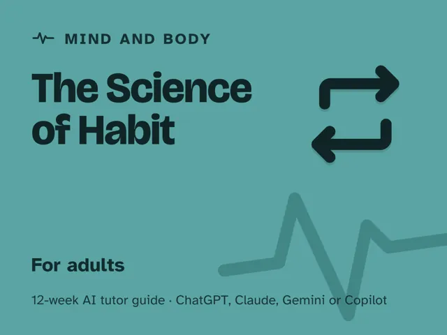

The Science of Habit
$29Instant download: a PDF to read, a browser copy, and the AI-tutor file you hand straight to any AI assistant.Buy it on Etsy →
Take the free placement check first: 15 minutes, and it names the week to start at.
A masterclass you actually finish, on why your habits keep failing and what actually fixes that. This is not another list of habit hacks or a pep talk about willpower. It's 12 weeks of understanding the actual mechanism (the cue-craving-routine-reward loop, friction, craving, and identity) so you can engineer change by design instead of gritting your teeth and hoping it sticks. Each week an AI tutor explains the mechanism in plain language, then hands you your own real habit and makes you diagnose it against the model. No psychology background needed.
Format: You lead one ~60-minute session each week, fully scripted: every step timed and written out for you. No psychology background or prior AI experience needed. A digital guide front-loads a "Never used an AI chat assistant? Start here" walkthrough that gets a complete beginner from zero to ready in about five minutes, using free AI assistants. No paid plan required.
What you get
- 12 ready-to-run ~60-minute weekly sessions, each with a plain-language concept, a concrete worked example, a minute-by-minute session plan with the AI-tutor prompts built in, a "show me you understand it" checkpoint where you diagnose your own habits against the mechanism, common mistakes to watch for, and practice to lock it in.
- An orientation that reframes habit change from a willpower contest into a system you can reason about, with the one rule that carries the whole course: name the cue and the craving before you touch the routine. Includes the five-minute beginner's AI setup walkthrough and four rescue prompts for when a session goes sideways.
- AI-tutor instructions built into every session: each session plan sets the AI up as a coach who asks before it tells, hands the diagnosis of your own habit back to you, and never lets you blame a slip on "weak willpower," plus four rescue prompts: for when you're stuck, when the AI starts diagnosing for you, when it feels too easy (it hands you a trickier boundary case), and to check you really understand.
- A personal habit system, designed and run on yourself in the two project weeks, plus a one-page "how I engineer a habit" checklist you build in the final week.
The 12 weeks
- Why Willpower Fails (and What Works Instead)
- The Habit Loop
- Cues & Triggers
- Rewards & Craving
- Friction: Making Good Habits Easy
- How to Break a Habit
- Friction in Reverse & Willpower Design
- Identity & Habits
- Designing Your Environment
- Project Week I: Design Your One Habit System
- Project Week II: Run It and Hold It
- Demo Day and the Habit-Engineer Mindset
Who it's for
Adults who keep failing at habits and are tired of generic advice; you want to understand the mechanism (the cue-craving-routine-reward loop, friction, identity, environment) well enough to actually make a habit stick, not just try the next hack you read. No background assumed.
Why this instead of a free chatbot
A raw chatbot will hand you a list of habit tips on request and move on. This pack ships the structure and guardrails it lacks: a real 12-week progression through the mechanisms that actually govern habit change, a mechanism-first method for diagnosing your own habits, and a tutor set up to teach the "how" and then make YOU reason, while refusing to let "I just need more willpower" pass as an answer. Understanding, not one more tip list.
FAQ
- Do I need any background in psychology? None. Every mechanism starts from what you already believe and gets built up in plain language with everyday examples.
- Is this a habit-hack list or a motivational program? No, and that's the point. It teaches how the loop works so you can evaluate (or invent) any habit tip yourself, instead of following one more list or relying on hype.
- Which AI does it use? Any modern AI chat assistant: ChatGPT, Claude, Copilot, Gemini. Free versions are enough; no paid plan needed. Never used one before? The guide's first section walks complete beginners through setup in about five minutes, before Week 1 starts.
- Will this actually help me build or break a real habit? Yes. The last three weeks are a real project: you design a full habit system, run it for a week, and troubleshoot it like an engineer, not a motivational poster.
- Is this treatment for an addiction or a compulsion? No. It teaches habit design for everyday habits. If a habit is tied to an addiction, a compulsion, or a mental-health concern, the guide and the tutor point you to a licensed professional instead.
- Is it only for the US? The guide is written in US English, and every session's prompt tells the AI to use your country or region for spelling, units, money, and examples.
- Refunds? Standard marketplace refund policy applies.
$29Instant download: a PDF to read, a browser copy, and the AI-tutor file you hand straight to any AI assistant.Buy it on Etsy →